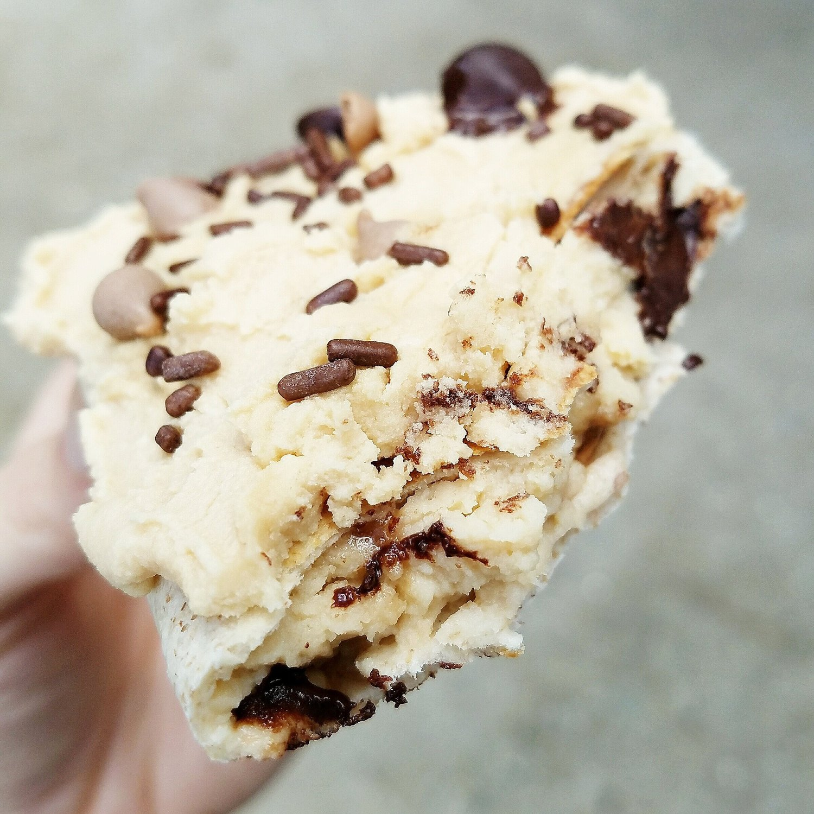

Cookie Dough Vegan Protein Poptart (gluten free)

Happy snacking to meeee with this cookie dough vegan protein poptart. It's a healthy alternative to the breakfast most americans know so well from childhood (or maybe adulthood too XD, no judgment). This recipe is sugar free, gluten free, and vegan - perfect for breakfast, a snack, or even dessert!
I finally found a good way to make my beloved protein pop tarts vegan. So of course- cookie dough flavor first! That was always my favorite flavor poptart when I was younger. I also really liked a limited flavor they had called blueberry muffin. Anyone remember this? What was your favorite flavor poptart? I feel like everyone has one they remember fondly, and it says a lot about a person, trust me.
I've been making these poptarts a lot lately since the filling flavor is so versatile! I've made snickerdoodle, PB&J, and chocolate. I'll probably post those recipes soon!
Until then, try this cookie dough vegan protein poptart out and let me know what you think! If you don't have pea protein and aren't vegan, check out my older, non-vegan recipes on the site! They're O.G. Like Biggie Smalls kinda O.G....except not.
Cookie Dough Vegan Protein Poptart
Serves: 1
-
1/4 cup dairy free plain Silk yogurt (2 oz)
-
1/2 serving vanilla Nuzest pea protein (15 g)
-
1 stevia packet
-
1 TBSP vegan chocolate chips
-
couple drops English toffee stevia drops
-
1 vegan, gluten free tortilla of choice
Mix all of your ingredients in a small bowl (except for the tortilla).* Once even, place your mixture in a tortilla. Fold all four edges around the batter to completely encase the batter. Heat a small pan to a low/medium heat, then add your folded poptart. Toast until lightly browned, flip, and lightly brown the other side.
Make any icing you'd like! I used more pea protein and maple syrup.
*If you don't have pea protein, any other kind of protein powder should work too! If it's not thick enough, add coconut flour or almond meal.